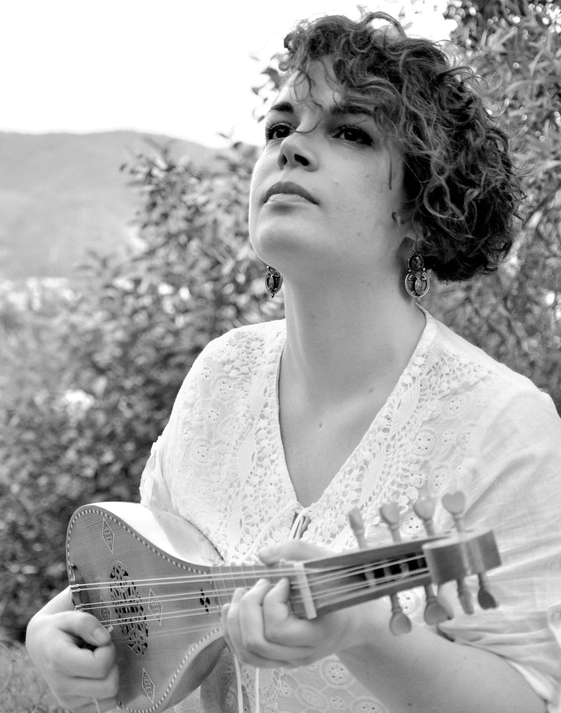
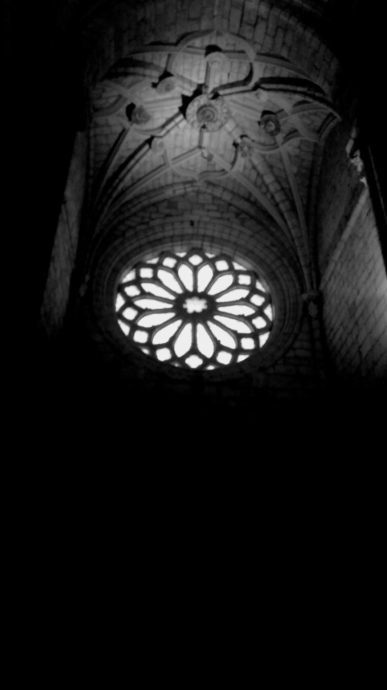
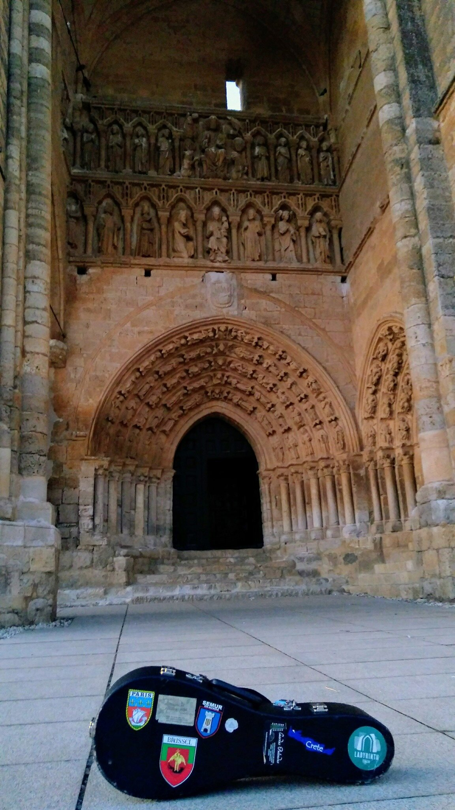
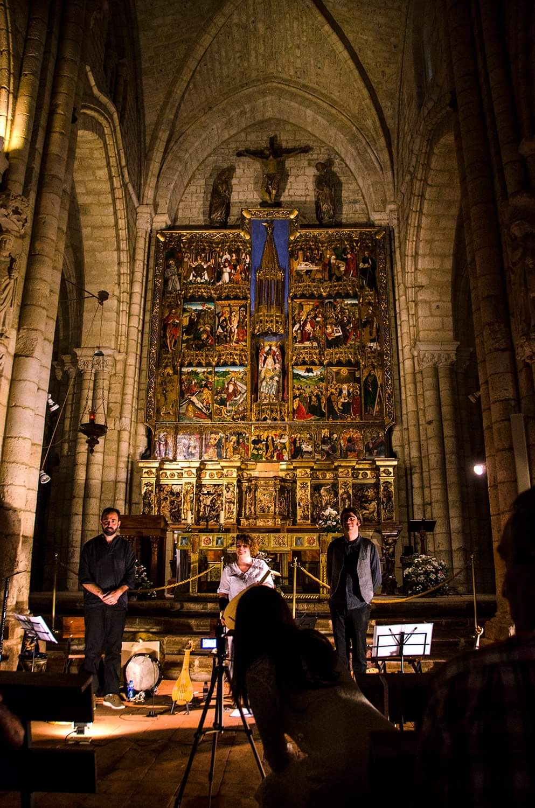

Fragmenta è nato da un'immagine: un frammento di un rosone del XIV secolo, spezzato da un terremoto, eppure ancora fulgido tra le macerie. Quella resistenza della bellezza è diventata lo spirito del progetto — un collettivo di musicisti dediti al recupero e all'esecuzione di repertori ai margini del tardo Medioevo (XII–XV secolo), tratti da fogli di guardia di manoscritti, codici smembrati e pergamene dimenticate.
Più che un ensemble, Fragmenta è un incontro fluido di interpreti e studiosi, plasmato di volta in volta dal repertorio specifico di ciascun programma, sempre guidato dall’idea che la musica medievale possa parlare direttamente all'anima, attraverso i secoli.
Vai lavar cabelos na fontana fría è il primo disco di Fragmenta, nato da una collaborazione con l'Università di Santiago de Compostela nell'ambito del progetto di ricerca sul patrimonio culturale della Galizia e del Portogallo settentrionale. L'album è dedicato alle origini della lirica iberica — le cantigas galego-portoghesi dei secoli XII e XIII, tra i più antichi repertori profani d’Europa. Sono canzoni di nostalgia, di attesa, di giovani donne che attingono acqua alla fontana; versi intimi sopravvissuti quasi per caso, che chiedono di essere cantati di nuovo.
La registrazione riunisce voce, liuto, chitarrino, citola, viella, ribeca, ghironda e tamburi a cornice — una costellazione di strumenti ricostruiti da fonti iconografiche medievali — suonati da me e da Giordano Ceccotti, Paolo Modugno, Miguel Abad Frutos. Da questo incontro tra ricerca e performance è nato qualcosa di più grande: una serie di concerti, un volume scientifico pubblicato dall'Università di Santiago de Compostela e il CD, uscito nell'ottobre 2019.




Il panorama musicale dell’Italia tra la fine del Trecento e l’inizio del Quattrocento è stato ricostruito sulla scorta dei pochi, grandi codici musicali sopravvissuti al tempo. Ne è uscita, agli occhi di molti, una storia agita da pochi protagonisti, che sembrano muoversi in un deserto sonoro, o quasi. Questo progetto dà voce a frammenti musicali riscoperti, spesso per caso, nei piatti di antichi registri notarili, nelle carte di rinforzo di incunaboli, nelle pagine sparse di manoscritti smembrati — tracce di un'Italia nascosta, mappata lungo l'Appennino.
Alcuni frammenti sono sopravvissuti integri; altri hanno richiesto una ricostruzione — colmare le voci mancanti, completare le lacune testuali, o trovare un percorso interpretativo alternativo attraverso la diminuzione strumentale. L'approccio non è mai quello del restauro, ma del dialogo: entrare nello spazio tra il compositore e il copista, trattare il materiale con cura ma anche con libertà. Il risultato è un mosaico di varietà inattesa, dalla polifonia arcaica a composizioni d'ispirazione francese e franco-fiamminga, testimonianza che lo spirito cosmopolita dell'epoca raggiunse persino i centri più piccoli — un mondo in cui sacro e profano, latino e volgare, musica liturgica e poesia d'amore si incontrano e si intrecciano.


Marginalia — Festival dell'Ascensione, Milano, 4 maggio 2025 → Libretto di sala →
Siobulé comincia con una parola e un paesaggio. La parola è l’etimo proposto da Varrone per «Sibilla» — che in dialetto eolico significa «consiglio di Dio». Il paesaggio è quello dei Monti Sibillini, lacerati dai terremoti del 2016. Da quella frattura sorge la domanda al centro del progetto: non come recuperare ciò che è andato perduto, ma come partecipare alla continuità viva di una tradizione.
Il punto di partenza è il Paradis de la reine Sibylle (1437–1442) di Antoine de La Sale, una narrazione di viaggio ambientata proprio tra quelle montagne, dove la Sibilla regna su una corte in cui si parlano tutte le lingue del mondo. Il repertorio segue quello spirito di molteplicità: fonti frammentarie del XV secolo, musica tradizionale umbra, pezzi antichi di Creta e del mondo ottomano, e composizioni originali, intrecciati attraverso una costellazione di strumenti a corde, fiati e percussioni di tutto il Mediterraneo. La musica si dispiega accanto al disegno dal vivo di Alessandro de Carolis, che emerge dalle sue fotografie dei Sibillini.